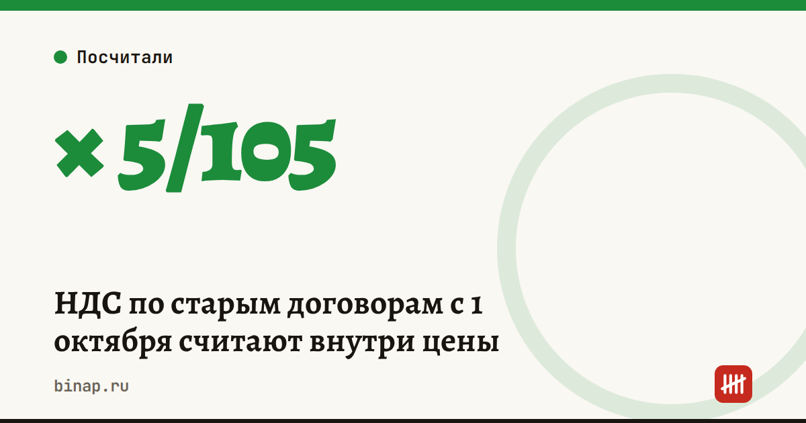

НДС по старым договорам с 1 октября считают внутри цены

С 1 октября 2026 года действует новый порядок НДС по длящимся договорам (закон от 04.08.2026 № 293-ФЗ). Если вы стали плательщиком НДС уже после подписания договора, налог можно не добавлять к цене, а выделить из неё расчётным методом.
Коротко
- Правило для тех, кто стал плательщиком НДС после заключения договора из-за изменения закона — прежде всего упрощенцев с доходом выше 20 млн ₽.
- НДС выделяют из цены: 120 000 ₽ × 5/105 ≈ 5 714 ₽ налога.
- Работает только если покупатель не может принять НДС к вычету и цену договора не меняли.
- Счёт-фактуру по таким договорам не выставляют.
Сроки, изменения и разборы для ИП и самозанятых — каждое утро в Telegram и MAX. Подпишитесь, чтобы не пропустить.
Для этого нужны три условия сразу:
- обязанность платить НДС появилась из-за изменения налогового законодательства уже после заключения договора;
- покупатель не может принять этот налог к вычету;
- цену договора не меняли, и в договоре нет условий о том, как её менять в такой ситуации.
Счёт-фактуру покупателю в этом случае не выставляют (п. 3 ст. 168 НК в новой редакции). Если хотя бы одно условие не выполнено, действует общий порядок: НДС сверх цены и счёт-фактура.
Кого касается: прежде всего ИП и компаний на УСН, которые в 2026 году стали плательщиками НДС из-за снижения порога до 20 млн ₽, а договоры заключали раньше, по цене «без НДС».
Как посчитать на примере. Договор на 120 000 ₽ в месяц, ставка НДС 5%. Если начислять сверху, покупатель должен бы заплатить 126 000 ₽. По новому правилу НДС сидит внутри: 120 000 × 5/105 ≈ 5 714 ₽ налога, выручка без НДС — 114 286 ₽.
- Выручка продавца без НДС
- НДС
По новому правилу цена для покупателя не меняется, а НДС выделяется из неё: 120 000 × 5/105.
Таблица с данными
| Вариант | Выручка без НДС | НДС | Платит покупатель |
|---|---|---|---|
| НДС сверху | 120 000 ₽ | 6 000 ₽ | 126 000 ₽ |
| НДС внутри | 114 286 ₽ | 5 714 ₽ | 120 000 ₽ |
Что сделать:
- Выпишите договоры, заключённые до того, как вы стали плательщиком НДС, и цену по которым не меняли.
- Отметьте, у каких покупателей нет права на вычет: физлица, упрощенцы без НДС, самозанятые.
- По таким договорам счёт-фактуру не выставляйте, а с бухгалтером сверьте, как отразить эти суммы в декларации за IV квартал.
- В новых договорах сразу пропишите, как меняется цена, если у вас появится НДС: тогда спорить с покупателем не придётся.
Как понять, подходит ли договор
| Вопрос | Если «да» | Если «нет» |
|---|---|---|
| Договор заключён до того, как вы стали плательщиком НДС? | идём дальше | общий порядок: НДС сверху |
| Покупатель не может принять НДС к вычету? | идём дальше | общий порядок |
| Цену и порядок её изменения не меняли? | НДС внутри цены, без счёта-фактуры | общий порядок |
Как понять, когда упрощенец становится плательщиком НДС, — в статье порог НДС для УСН. Сколько платить на «доходах» и «доходах минус расходы» — в калькуляторе УСН. Как вычесть НДС по товарам, которые остались с периода без НДС, — вычет НДС по остаткам.
Частые вопросы
Если покупатель — компания на ОСНО с правом на вычет? Тогда правило не работает: НДС начисляется сверху, покупателю выставляется счёт-фактура.
Можно ли применить правило к договору, по которому мы уже подняли цену? Нет: одно из условий — цену договора не меняли.
Какая ставка НДС в примере? 5% — одна из пониженных ставок для упрощенцев. Свою ставку выбирайте с бухгалтером: от неё зависит и расчёт налога внутри цены.